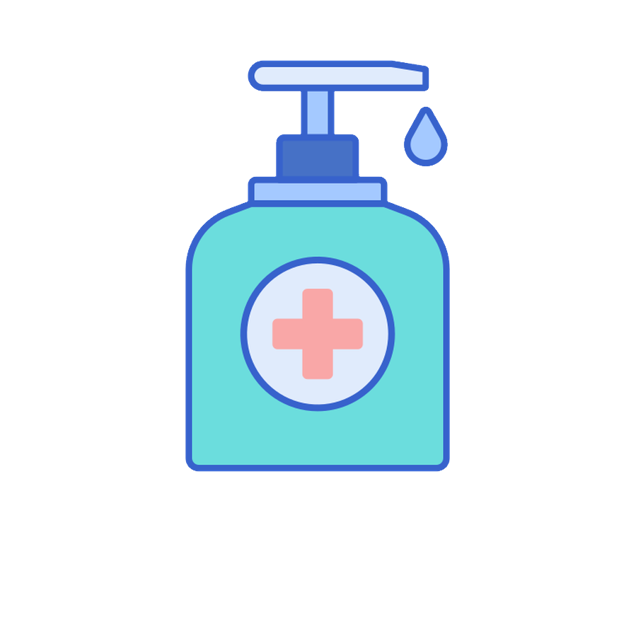

Як захистити себе від туберкульозу
- Уникайте тісного контакту з усіма, хто має симптоми застуди або грипу
- Негайно звертайтеся до лікаря, якщо у вас підвищена температура, кашель
- Прикривайте рот і ніс при кашлі або чханні суглобом ліктя або серветкою
Що робити якщо маєте підозру на туберкульоз
- Мийте руки мінімум 20 секунд
- Носіть маску скрізь
- Проконсультуйтеся з лікарем
Що не робити якщо маєте підозру на туберкульоз
- Без потреби не виxодьте з квартири
- Не чіпайте лице
- Уникайте тісного контакту з усіма, кого є можливість заразити
Як захистити себе від туберкульозу
- Користуйтеся антисептиком
- Зберігайте соціальну дистанцію
- Не забувайте носити маску
